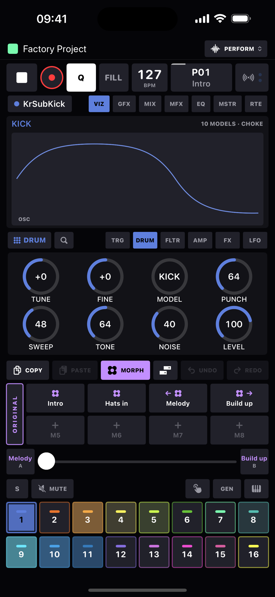

Modulation
Three ways to get things moving: two LFOs on every track, knob moves you record as you play, and morphs, which are snapshots of the whole board that you can fade between.
LFOs
Every track has two LFOs, on the LFO page. Each one is a row of WAVE, RATE, MULT and DEPTH, with a live lane in the display above showing what it's doing.
| Knob | Options |
|---|---|
| WAVE | SIN, TRI, SAW, SQR or RND. |
| RATE | The period in steps, anywhere from 1 to 128 with no fixed stops, or 0.05 to 8 Hz when MULT is on HZ. |
| MULT | ×1, ×2, ×4, ×8, ×16, or HZ to come off the tempo altogether. |
| DEPTH | ±64 either way. Negative flips the shape. |
- The chip on the LFO lane sets the trigger mode. FREE runs all the time, TRIG restarts on every trig, HOLD samples a value and freezes it, ONE plays a single cycle and HALF plays half of one.
- To put an LFO on a knob, hold the knob (or tap its label) to open the modulation drawer: Off, LFO 1 or LFO 2, plus a depth scale for that knob. A knob with an LFO on it wears a small wave badge. A track has eight modulation slots, so that's eight knobs with LFOs at once. On the AU device the slot knobs take LFOs the same way.
- The RND lane draws the real sample-and-hold output, so what you see is what you'll hear.
Recorded automation (CC lanes)
- Arm REC, press play and turn any knob. The movement is recorded at full tick resolution and plays back with the pattern. A knob with a lane on it wears a curve badge.
- Recording over a lane replaces it. While your new sweep is going, everything the playhead passes over is erased, so you don't end up with two takes fighting.
- Lanes are sent to hardware economically, thinned to 1/64-note events with repeats dropped. You can clear a track's lanes from its track sheet with Clear Recorded CC Automation.
- On playback the knob follows its lane on screen. With a step latched, the knob shows the lane's value at that step, dimmed so you can tell it from a real p-lock.
Morphs
A morph is a snapshot of the whole board's sound: every internal device's full parameter set, every MIDI track's 24 knob values, both LFOs on each track, and the global mutes. Patterns aren't involved. Morphs are how one pattern wears eight different outfits.
- There are eight slots per pattern on the MORPH strip, which replaces the step grid so the pads stay in reach. Tap an empty pad to save, tap a filled one to recall it, hold to overwrite. The menu has Rename, Save Current Here, Set as Morph A or B, and Clear.
- ORIGINAL, the tall pad on the left of the strip, is your safety net. Tweak the sound with no morph selected and it's captured there as you go, and recalling a morph never touches it. So the sound you had before you started tapping morphs is always one tap away, and tapping the selected morph again brings ORIGINAL back. It looks after itself. There's no save, rename or clear for it, and it can't be put on the crossfader or in a song row, because nothing is allowed to overwrite it.
- Hold ORIGINAL to turn on morph sync: the pad fills and reads SYNC. While it's on, anything you change in any morph, ORIGINAL included, is written into all the others as well, the same value in each, so a fix to the kick's tuning or a new sample reaches every outfit at once. Mutes are left out of it, and recalling a morph never counts as an edit. Hold again to turn it off. It's saved with the pattern.
- The A/B crossfader takes a morph at each end and lets you fade between them. Parameters move continuously, LFO depth and rate too. Discrete things like a wave shape or a mode switch at the halfway point, and the mutes snap in when the fader reaches an end.
- Morphs update live. While a morph is governing the sound, your edits are captured back into it, so the ringed morph is always what you're hearing. Crossfader moves and recalls don't count as edits.
- Song rows can recall a morph as they come in. Pattern P03 with the "chorus lift" morph, then P03 again with "strip it back".
- The morph pads and the crossfader can all be MIDI-learned, so a real fader can ride the morph.

Tip
Stack all three. A slow LFO breathing the filter, a recorded lane pumping a
send, and the morph fader pulling the whole kit between two moods, all at
once, and none of it touches the sound underneath.